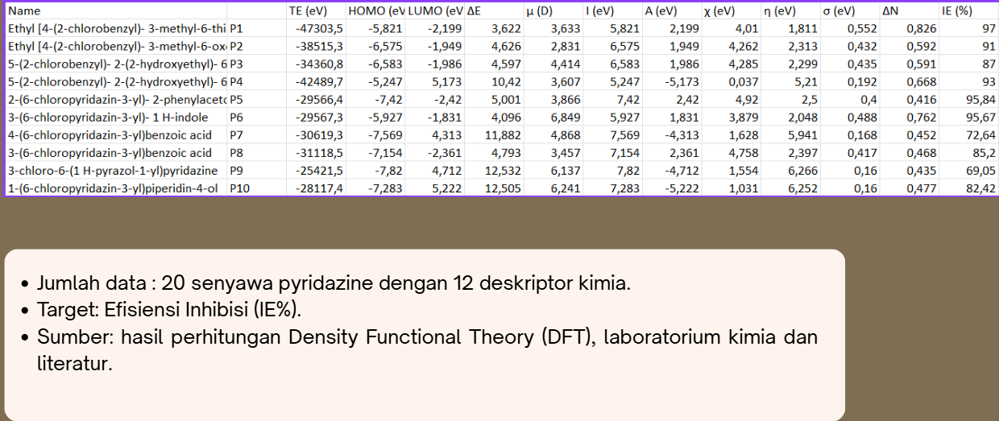
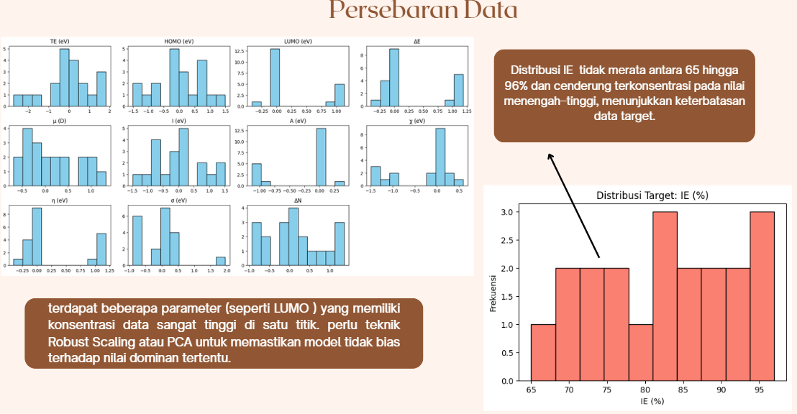
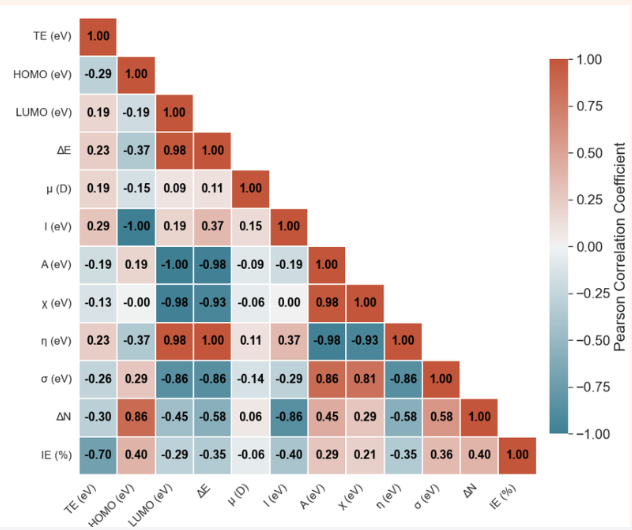
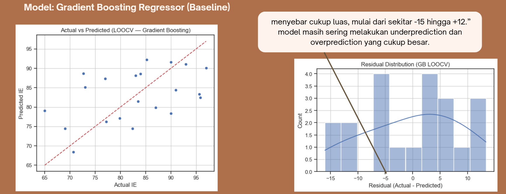
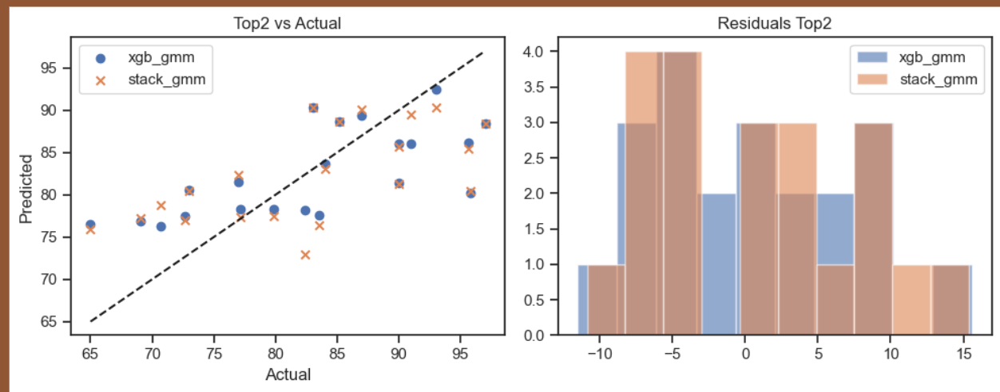
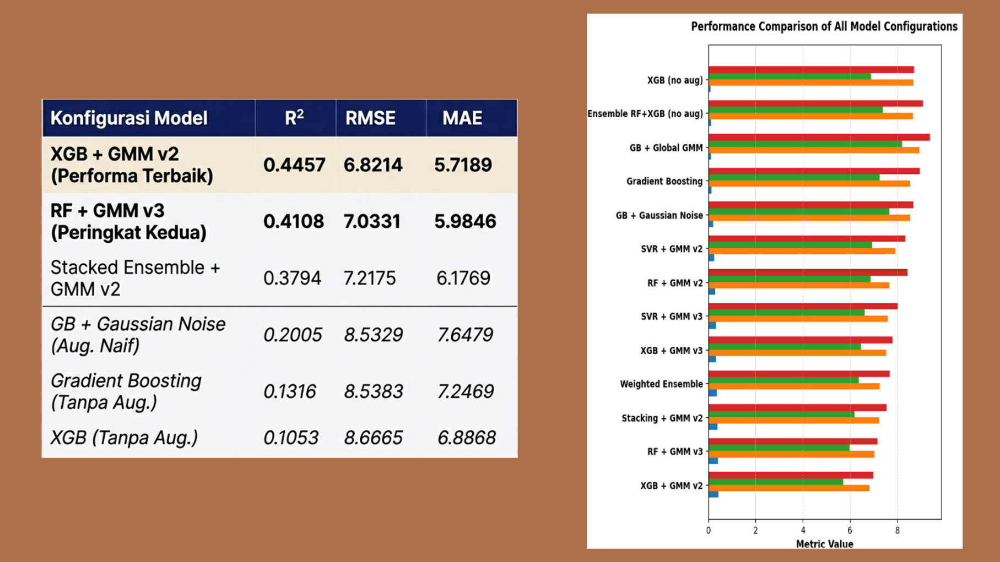

Prediksi Efidiensi Inhibisi Korosi - Detail Proyek






Data Scientist
Gradient Boosting Regressor (GBR), Random Forest (RF), XGBoost, Support Vector Regression (SVR), Gaussian Mixture Model (GMM), HDBSCAN Clustering, Gaussian Noise, Bootstrap Sampling, RobustScale, Mutual Information (MI), Principal Component Analysis (PCA), eave-One-Out Cross-Validation (LOOCV, Grid Search & 5-fold Cross-Validation Internal, Permutation Testing
Kerangka Kerja Bebas Kebocoran Data (Leakage-Free Pipeline),Augmentasi Data Multi-Skala berbasis GMM (Gaussian Mixture Model), Rekayasa Fitur Berbasis Teori HSAB (Hard-Soft Acid-Base), Dukungan Multi-Algoritma Machine Learning & Ensemble, Otomatisasi Seleksi Fitur (Mutual Information & PCA), Evaluasi Performa Komprehensif & Analisis Residual
Background
- Korosi pada baja karbon dalam lingkungan asam merupakan masalah krusial yang menyebabkan kerugian ekonomi global bernilai miliaran dolar setiap tahun.
- Metode eksperimental konvensional (seperti uji kehilangan berat dan elektrokimia) cenderung mahal, memakan waktu lama, dan memiliki tantangan dalam hal reproduksibilitas.
- Hal ini mendorong pemanfaatan pendekatan komputasional berbasis Machine Learning dan Quantitative Structure-Property Relationship (QSPR). Namun, studi QSPR pada inhibitor korosi sering kali terkendala oleh ukuran dataset yang sangat kecil (<50 molekul), yang berisiko tinggi memicu overfitting dan menghasilkan evaluasi performa yang bias.
Objective
Mengembangkan kerangka kerja pemodelan QSPR machine learning yang sepenuhnya bebas dari kebocoran data (leakage-free), menerapkan feature engineering berbasis prinsip kimia teoretis, serta memanfaatkan Gaussian Mixture Model (GMM) untuk augmentasi data guna meningkatkan akurasi prediksi efisiensi inhibisi korosi pada dataset berukuran kecil.
Dataset
- Berisi 20 senyawa turunan piridazin (pyridazine derivatives) yang dievaluasi menggunakan metode kuantum-kimia.
- Memiliki 12 deskriptor kimia-kuantum, meliputi Total Energy (TE), HOMO, LUMO, Energy Gap (ΔE), Dipole Moment (μ), energi ionisasi (I), afinitas elektron (A), elektronegativitas (χ), hardness (η), softness (σ), fraksi transfer elektron (ΔN), serta variabel target berupa Efisiensi Inhibisi Korosi (IE %).
What
Proyek ini menghadirkan sebuah sistem komputasi QSPR end-to-end yang mengintegrasikan validasi silang ketat, pra-pemrosesan terisolasi, rekayasa fitur berbasis Teori Asam-Basa Keras-Lunak (HSAB), serta teknik augmentasi data generatif berbasis Gaussian Mixture Model (GMM) untuk mengatasi keterbatasan data pada prediksi efisiensi inhibisi korosi senyawa kimia.
Why
- Sebagian besar literatur terdahulu melaporkan nilai R² > 0.90 pada dataset kecil yang ternyata terbukti menyesatkan akibat terjadinya overfitting atau kesalahan metodologis seperti data leakage (pra-pemrosesan dilakukan sebelum pembagian data/split).
- Diperlukan sebuah metodologi yang ketat—menggabungkan validasi silang yang ketat, penskalaan per-fold, dan augmentasi khusus data latih—untuk menghasilkan model prediksi awal yang valid, stabil, dan dapat direplikasi secara ilmiah untuk penapisan material pencegah korosi.
How
- Validasi Ketat (LOOCV): Memastikan setiap sampel uji diuji secara independen tanpa pernah bersentuhan dengan proses pelatihan menggunakan Leave-One-Out Cross-Validation.
- Pra-Pemrosesan Aman (Leakage-Free): Menggunakan
RobustScalerberbasis median dan IQR untuk mengatasi distribusi data yang tidak normal dan outlier secara per-fold. - Rekayasa Fitur (Feature Engineering): Menambahkan kombinasi interaksi non-linear yang didasarkan pada Teori Asam-Basa Keras-Lunak (HSAB), seperti perkalian χ × ΔE dan η².
- Augmentasi Data Berbasis GMM: Menerapkan Gaussian Mixture Model (GMM) multi-skala dan hierarkis secara eksklusif pada subset data latih di setiap iterasi fold untuk menghasilkan sampel sintetis yang valid secara kimiawi guna memperluas domain variabilitas.
- Pelatihan Model Ensemble: Menguji berbagai algoritma machine learning termasuk
Gradient Boosting Regressor (GBR),Random Forest (RF),Support Vector Regression (SVR), danExtreme Gradient Boosting (XGBoost).
Results
- Model baseline tanpa augmentasi menunjukkan performa yang sangat lemah (
R² < 0.20), yang mengonfirmasi rendahnya kompleksitas informasi bawaan dari dataset mentah berukuran n=20. - Kombinasi augmentasi berbasis GMM terbukti secara signifikan meningkatkan kemampuan generalisasi model:
- Konfigurasi XGBoost + GMM v2 mencapai performa terbaik dengan nilai
R² = 0.4457,RMSE = 6.8214,MAE = 5.7189, danMAPE = 6.99%(peningkatan akurasi lebih dari 300% dibandingkan model tanpa augmentasi). - Konfigurasi Random Forest + GMM v3 menyusul di posisi kedua dengan
R² = 0.4108danRMSE = 7.0331.
- Konfigurasi XGBoost + GMM v2 mencapai performa terbaik dengan nilai
- Analisis residual dan pengujian permutasi statistik (
p < 0.05) mengonfirmasi bahwa peningkatan performa tersebut benar-benar valid secara statistik dan terbebas dari artefak kebetulan.
Conclusion
- Kerangka kerja QSPR yang diusulkan berhasil membuktikan bahwa integrasi feature engineering berbasis prinsip kimia (HSAB) dan augmentasi data hierarkis berbasis GMM secara ketat (leakage-free) mampu mengatasi keterbatasan informasi pada dataset ultra-kecil (n=20).
- Meskipun nilai R² (0.41–0.45) belum mencukupi untuk prediksi kuantitatif presisi tinggi mutlak, metodologi ini sangat efektif dan bernilai strategis tinggi sebagai alat penyaringan awal (early-stage screening) untuk memprioritaskan kandidat inhibitor korosi baru secara efisien.